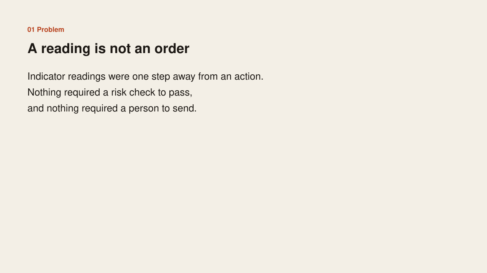
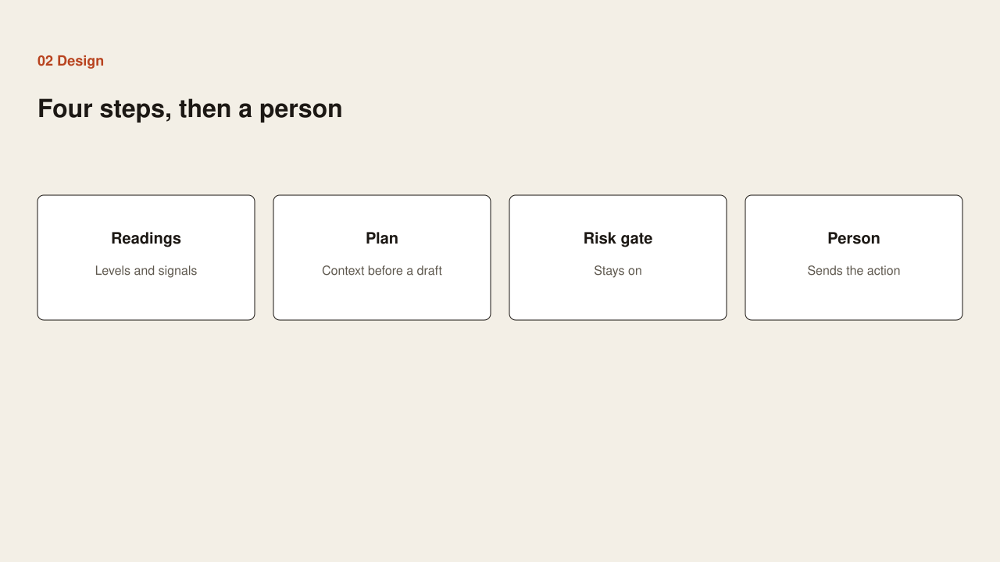
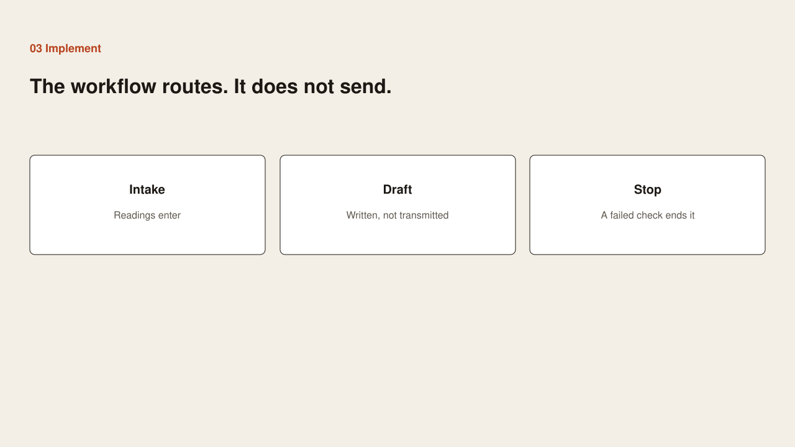
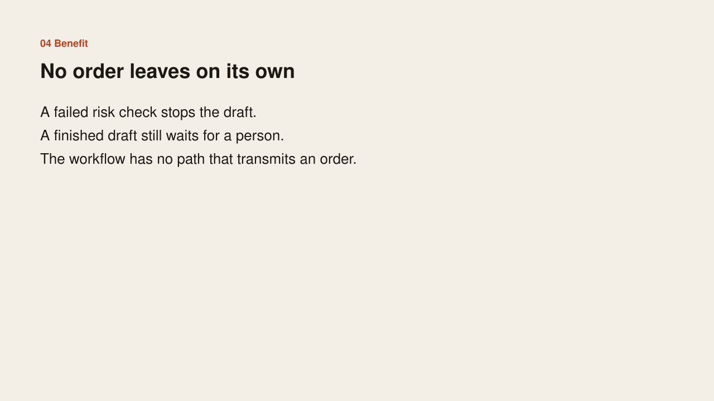

Problem
Problem

Indicator readings were one step away from an action. Nothing required a risk check to pass, and nothing required a person to send.
Case study
Problem

Indicator readings were one step away from an action. Nothing required a risk check to pass, and nothing required a person to send.
Design

Four steps, then a person. Readings come in. A plan adds context. A risk gate stays on. A person sends the action. A draft is not an order.
Implementation

Readings enter the workflow. A draft is written and not transmitted. A failed risk check ends the draft.
Benefit

A failed check stops the work. A finished draft still waits for a person. The workflow has no path that transmits an order.